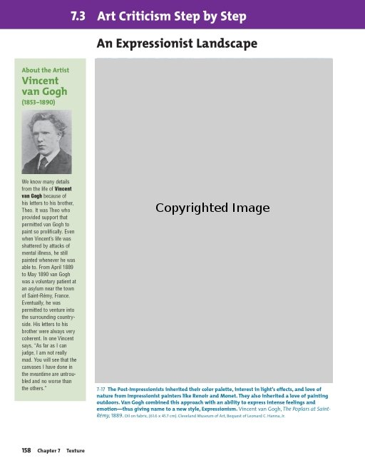
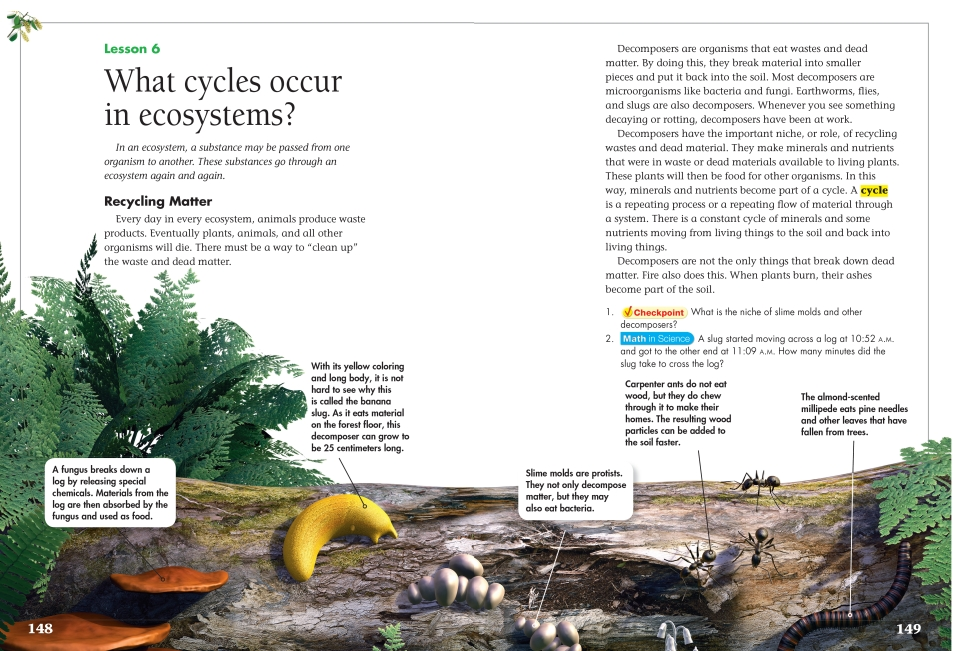

Part II(e): Images
Part II(e): Images
DAISY 3 Structure Guidelines
Last Revised: June 4, 2008
This section of the guidelines explains the elements used to mark up images and their associated captions and descriptions.
Information Object: Images
Definition
An image is a graphical object presented in a visual format.
Markup
The <img> element may be used alone to mark a single image. However, if there is an associated caption and/or a <prodnote> containing a description of the image, the <imggroup> tag should be used. The <imggroup> element provides a container for one or more <img>s and associated <caption>(s) and <prodnote>(s). The <imggroup> element may contain:
- multiple
<img>s if they share a caption, with the ids of each <img> referenced by the imgref attribute on <caption>, e.g., <caption imgref="id1 id2 ...">,
- multiple
<caption>s if several captions refer to a single <img>. When the <img> has id="xxx", each caption would have the same value for imgref, i.e., <caption imgref="xxx"> (that is, each caption must be associated with a specific image using the 'id', 'idref' pair),
- multiple
<prodnote>s if different versions are needed for different media (e.g., large print, braille, or print). If several <prodnote>s refer to a single <img> with id="xxx", each prodnote would have the same <prodnote imgref="xxx">.
If multiple <prodnote>s refer to a group of images, the imgref attribute would include the ids of all images in that group, e.g., <prodnote imgref="id1 id2 id3 ...">.
- multiple
<pagenum>s.
The alt attribute is required for all <img>s and should contain a short description of the image; if the caption describes the image sufficiently, it may be copied here..
Images may be tagged simply to mark their location in the book. The SMIL file(s) may be used to control the presentation of images. The requisite attributes to control image display from the markup in the textual content file are not provided in the DTBook DTD.
New in DTBook-2005-3: <pagenum>s may now be included within <imggroup>.
Syntax
<imggroup>
<img>...</img>
<caption>...</caption>
<pagenum>...</pagenum>
<prodnote>...</prodnote>
</imggroup>
Examples
Example 1
This example shows markup for a single image and its associated <caption> and <prodnote>.
<imggroup id="imggrp_2">
<img id="img1_1" src="fig1_01.png" alt="By the way, Sam, as someday
you'll be paying for my entitlements, I'd like to thank you in
advance." />
<caption imgref="img1_1">By the way, Sam, as someday you'll be paying for my
entitlements, I'd like to thank you in advance.</caption>
<prodnote render="optional" imgref="img1_1" id="pnote_p3" showin="blp">Reader's note: A
cartoon shows a father in his easy chair looking at the newspaper.
As his small son plays with a pull toy on the floor next to him, the
father says to the boy, "By the way, Sam, as someday you'll be paying
for my entitlements, I'd like to thank you in advance." End of note.
</prodnote>
</imggroup>
Example 2
This example shows markup for two images that share a single <caption> and two <prodnote>s. The first <prodnote> will show only in a braille version of the textual content file, the second in either a print or large-print version.
<imggroup id="imggrp_43">
<img id="img_12" src="orion62.jpg" alt="Orion Nebula by visible and
ultraviolet light" />
<img id="img_13" src="orion3.jpg" alt="Young stars in Orion Nebula" />
<caption imgref="img_12 img_13">Many young stars lie inside the mass of
gas and dust that forms the Orion Nebula.</caption>
<prodnote render="optional" imgref="img_12 img_13" id="pnote_19" showin="bxx">Producer's Note: Two images
of the Orion Nebula are shown, revealing many small points of light
within the swirling mass of gas and dust that forms the nebula. Reference accompanying tactile drawing, number 22.
</prodnote>
<prodnote render="optional" imgref="img_12 img_13" id="pnote_20" showin="xlp">Producer's Note: The two
images of the Orion Nebula shown above reveal many small points of
light within the swirling mass of gas and dust that forms the nebula.
</prodnote>
</imggroup>
Illustrated Example 1
Page Sample:
(Show/Hide)

Page 158 from The Visual Experience (0-87192-627-X) by Davis Publications
Sample Code:
(Show/Hide)
<level2>
<pagenum id="IDA1OMN">158</pagenum>
<h2>7.3 Art Criticism Step by Step </h2>
<level3>
<h3>An Expressionist Landscape</h3>
<sidebar render="optional">
<hd>About the Artist Vincent van Gogh (1853-1890)</hd>
<imggroup>
<img src="images/U10C03/p158-001.png" alt="Photograph
of Vincent van Gogh" width="84" height="108"/>
</imggroup>
<p>We know many details from the life of <strong>Vincent
van Gogh</strong> because of his letters to his
brother, Theo. It was Theo who provided support that
permitted van Gogh to paint so prolifically. Even
when Vincent's life was shattered by attacks of
mental illness, he still painted whenever he was able
to. From April 1889 to May 1890 van Gogh was a
voluntary patient at an asylum near the town of Saint-
Rémy, France. Eventually, he was permitted to venture
into the surrounding countryside. His letters to his
brother were always very coherent. In one Vincent
says, "As far as I can judge, I am not really mad.
You will see that the canvases I have done in the
meantime are untroubled and no worse than the
others."</p>
</sidebar>
<imggroup>
<img src="images/U10C03/p158-002.png" alt="Painting by
Vincent van Gogh, The Poplars at Saint-Rémy,"
width="396" height="545"/>
<caption>7-17 <strong>The Post-Impressionists inherited
their color palette, interest in light's effects, and
love of nature from Impressionist painters like
Renoir and Monet. They also inherited a love of
painting outdoors. Van Gogh combined this approach
with an ability to express intense feelings and
emotion--thus giving name to a new style,
Expressionism.</strong> Vincent van Gogh,<em> The
Poplars at Saint-Rémy,</em> 1889. Oil on fabric, (61.6
x 45.7 cm). Cleveland Museum of Art, Bequest of
Leonard C. Hanna, Jr.</caption>
</imggroup>
</level3>
</level2>
Illustrated Example 2
Page Sample:
(Show/Hide)

Page 148-149 from Science (0-328-34506-2) by Pearson Scott Foresman
Sample Code:
(Show/Hide)
<level3>
<pagenum id="IDAVAYN">148</pagenum>
<h3>Lesson 6 What cycles occur in ecosystems?</h3>
<p><em>In an ecosystem, a substance may be passed from one
organism to another. These substances go through an ecosystem
again and again.</em></p>
<level4>
<h4>Recycling Matter</h4>
<p>Every day in every ecosystem, animals produce waste
products. Eventually plants, animals, and all other
organisms will die. There must be a way to "clean up" the
waste and dead matter.</p>
<imggroup>
<img src="images/U13C07/p148-001.png" alt="Various
plants and animals 'recycling' a log." width="1152"
height="539"/>
<prodnote render="optional">
<p>Various decomposers on a log. Each has a callout
identifying and describing each decomposer. These
are listed as follows:</p>
<list type="pl">
<li>A fungus breaks down a log by releasing
special chemicals. Materials from the log are
then absorbed by the fungus and used as
food.</li>
<li>With its yellow coloring and long body, it is
not hard to see why this is called the banana
slug. As it eats material on the forest floor,
this decomposer can grow to be 25 centimeters
long.</li>
<li>Slime molds are protists. They not only
decompose matter,but they may also eat
bacteria.</li>
<li>Carpenter ants do not eat wood, but they do
chew through it to make their homes. The
resulting wood partciles can be added to the
soil faster.</li>
<li>The almond-scented millipede eats pine needles
and otherleaves that have fallen from trees.
</li>
</list>
</prodnote>
</imggroup>
<pagenum id="IDAJBYN">149</pagenum>
<p>Decomposers are organisms that eat wastes and dead matter.
By doing this, they break material into smaller pieces and
put it back into the soil. Most decomposers are
microorganisms like bacteria and fungi. Earthworms, flies,
and slugs are also decomposers. Whenever you see something
decaying or rotting, decomposers have been at work.</p>
<p>Decomposers have the important niche, or role, of recycling
wastes and dead material. They make minerals and nutrients
that were in waste or dead materials available to living
plants. These plants will then be food for other
organisms. In this way, minerals and nutrients become part
of a cycle. A <strong>cycle</strong> is a repeating
process or a repeating flow of material through a system.
There is a constant cycle of minerals and some nutrients
moving from living things to the soil and back into living
things.</p>
<p>Decomposers are not the only things that break down dead
matter. Fire also does this. When plants burn, their ashes
become part of the soil.</p>
<list type="pl">
<li>1. <strong>Checkpoint</strong> What is the niche of
slime molds and other decomposers? </li>
<li>2. <strong>Math In Science</strong> A slug started
moving across a log at 10:52 A.M. and got to the
other end at 11:09 A.M. How many minutes did the slug
take to cross the log? </li>
</list>
</level4>
</level3>
Comments and Alternative NIMAS Examples:
(Show/Hide)<imggroup>,<img>, and<caption>are NIMAS-required elements.While the use of optional tags is recommended, if one is only using the required tag set, the above section might be formatted as follows:
<level2> <pagenum id="IDA1OMN">158</pagenum> <h2>7.3 Art Criticism Step by Step </h2> <level3> <h3>An Expressionist Landscape</h3> <sidebar render="optional"> <hd>About the Artist Vincent van Gogh (1853-1890)</hd> <imggroup> <img src="images/U10C03/p158-001.png" alt="" width="84" height="108"/> </imggroup> <p>We know many details from the life of <strong>Vincent van Gogh</strong> because of his letters to his brother, Theo. It was Theo who provided support that permitted van Gogh to paint so prolifically. Even when Vincent's life was shattered by attacks of mental illness, he still painted whenever he was able to. From April 1889 to May 1890 van Gogh was a voluntary patient at an asylum near the town of Saint- Rémy, France. Eventually, he was permitted to venture into the surrounding countryside. His letters to his brother were always very coherent. In one Vincent says, "As far as I can judge, I am not really mad. You will see that the canvases I have done in the meantime are untroubled and no worse than the others."</p> </sidebar> <imggroup> <img src="images/U10C03/p158-002.png" alt="" width="396" height="545"/> <caption>7-17 <strong>The Post-Impressionists inherited their color palette, interest in light's effects, and love of nature from Impressionist painters like Renoir and Monet. They also inherited a love of painting outdoors. Van Gogh combined this approach with an ability to express intense feelings and emotion--thus giving name to a new style, Expressionism.</strong> Vincent van Gogh,<em> The Poplars at Saint-Rémy,</em> 1889. Oil on fabric, (61.6 x 45.7 cm). Cleveland Museum of Art, Bequest of Leonard C. Hanna, Jr.</caption> </imggroup> </level3> </level2>